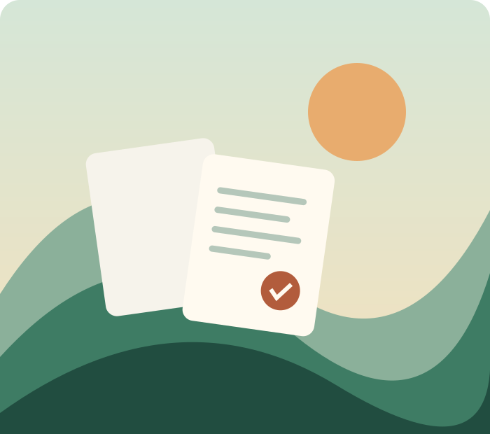

Ein kleines Staticseal-Beispiel
Ein Ausflug.
Ein Ausflug.
Alles dabei.
Drei Seiten, ein Bild, ein Favicon und zwei Stylesheets. Nach dem Verpacken reist diese Website in einer Datei.
Selbst ausprobieren ↓
Die Seite bleibt lebendig.
Dieser Zähler nutzt JavaScript direkt aus der HTML-Datei.
Eine kleine Entdeckungstour
- Klicke den Zähler. Sprunglinks innerhalb der Seite erhalten seinen Stand.
- Öffne die Packtipps auf einer Unterseite.
- Wechsle zur Kontaktseite und wieder zurück.
- Teste auch die Zurück-Funktion deines Browsers.
Im Beispiel mit Extras findest du außerdem ein unbenutztes Bild und eine Markdown-Packliste in der Dateiauswahl oben.
Zurück nach oben ↑